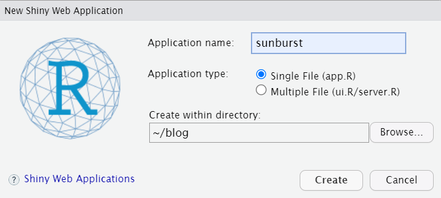
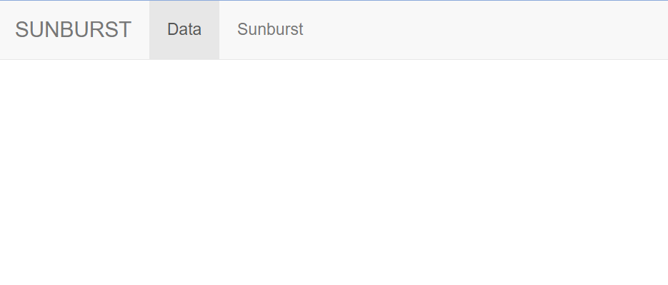

## Setup
# install.packages("data.table")
# install.packages("sunburstr")
library(sunburstR);library(data.table);library(htmltools);library(magrittr)sunburstr 패키지 소개
sunburstr 패키지의 이용한 계층적 데이터 표시 방법에 대해 알아보자
R에서 선버스트 차트를 그리는 방법은 다양하다. 그중에서 sunburstR 패키지가 도출 결과가 매우 깔끔하고, shiny에서도 실행이 가능하며 plotly나 ggplot을 사용하는 것보다 편리하다 느껴 이 글에서 소개하려고 한다.
1. 선버스트 차트란?
계층형 데이터 구조를 시각화할 때 이상적인 선버스트 차트는 계층 구조를 갖는 외부원과 내부원의 관계를 쉽게 보여주는 차트이다.


image from syncfusion*image from earo
하나의 고리 또는 원이 계층 구조의 각 수준을 나타내며, 가장 안쪽에 있는 원이 계층 구조의 가장 높은 수준을 나타낸다. 복잡한 계층적 데이터를 명확하고 매력적인 방식으로 이해할 수 있는 능력에 있다.
언제 사용하면 될까?
- 전체 항목 중에서 개별 항목이 차지하는 비중을 파악하고 싶을 때
트리맵 차트와 유사하게 데이터가 차지하는 비율을 면적으로 표현한 그래프이기 때문에 비중을 파악하기 용이하다.
데이터의 패턴 및 관계를 나타낸다.
- 일례로, 가장 많은 하위 범주를 가진 범주나 가장 인기 있는 하위 범주를 빠르게 파악할 수 있다.
- 위계 구조를 가지는 데이터들의 패턴을 빠르게 확인하고 싶을 때
- 데이터의 개별 요소들이 소속된 계층이 있는 경우 패턴 파악이 용이하다.
2. SunburstR 패키지
R에 있는 sunburstr 패키지를 사용해 직접 계층적 데이터의 선버스트 차트를 만들어 보자.
2.1. Setup
sunburstr은 R에서 기본적으로 제공되는 데이터 구조가 아니기 때문에, package 설치가 필요합니다.
위의 과정을 통해 package 설치 및 불러오기를 실행합니다.
2.2. Load data
예제 데이터로는 2 단계에 걸쳐서 약을 복용한 149명 환자의 데이터를 사용한다.
#load data
data <- fread("https://raw.githubusercontent.com/seodaegal/blog-sy/main/blog_example_data/sunburst_example.csv")
rmarkdown::paged_table(data)data에서 Step.1은 첫 단계에서 복용한 약의 종류, Step.2는 첫 단계 이후에 두 번째로 복용한 약의 종류이다.- personCount는 특정 약을 복용한 사람의 수를 의미한다.
2.3. Fix data
데이터를 불러온 후, sunburstr 패키지를 적용하기 위해서는 sunburstr에 맞게 데이터를 재정렬해야 한다.
data에는 단계마다 (Step.1, Step.2) 복용한 약이 한 개가 아니라 여러 개인 경우도 있어 각 단계 안에서도 복용한 약을 따로 분리해 주자.
# size는 personCount로 지정
data2 <-data[, names(data) := lapply(.SD, function(x) gsub("\\+", "-", x)), .SDcols = names(data)]%>%
.[, .(size= personCount, Step.1=Step.1, Step.2=Step.2)]%>%
.[, c("st1level2", "st1level1") := tstrsplit(Step.1, " - ", fixed = TRUE, type.convert = FALSE)]%>% #Step.1에서 복용한 약 종류는 2개라서, 2개의 다른 열로 나눈다
.[is.na(st1level1), st1level1 := st1level2]%>% # 복용한 약의 종류가 하나라면 두번째 열에 똑같은 약을 입력하도록 한다다
.[, Step.1:= NULL]%>%
.[, c("st2level1", "st2level2", "st2level3") := tstrsplit(Step.2, " - ", fixed = TRUE, type.convert = FALSE)]%>% #Step.2에서 복용한 약 종류는 3개라서, 3개의 다른 열로 나눈다
.[is.na(st2level2), st2level2 := st2level1]%>%
.[is.na(st2level3), st2level3 := st2level2] %>% # 복용한 약이 3개가 아닐 경우 그전에 복용했던 약을 입력
.[,Step.2:=NULL]%>%
setcolorder(., c("st1level1", "st1level2", "st2level1", "st2level2","st2level3", "size"))%>% .[]
# setcolorder( ) 함수로 열의 순서를 정한다
rmarkdown::paged_table(data2)data2 에서
st1은 Step.1,st2는 Step.2 에서 복용한 약을 의미한다.size는 해당 약을 복용한 personCount 이다.
열의 순서가 hierarchy에 영향을 미치기 때문에, 열의 순서를 ordering 하는데 주의가 필요하다!- 계층 구조가 높을수록 열의 순서가 왼쪽으로 오게 설정해야 한다.
2.4. Building hierarchy on data
d3r 패키지를 사용해 sunburstr에 적합한 환자들의 약 복용 데이터의 계층 구조를 구축한다. d3_nest 함수로 높은 순서대로 정리된 data2의 변수들을 그룹화한 뒤 데이터 갯수 변수 (count)를 지정한다.
#datatable을 hierarchy로 convert
library(d3r)
hierarchy <- d3_nest(data2, value_cols = "size")
hierarchy{"children":[{"name":"Aspirin","children":[{"name":"Clopidogrel","children":[{"name":"Clopidogrel","children":[{"name":"cilostazol","children":[{"name":"Aspirin","size":"8","colname":"st2level3"}],"colname":"st2level2"},{"name":"Aspirin","children":[{"name":"Triflusal","size":"2","colname":"st2level3"}],"colname":"st2level2"}],"colname":"st2level1"}],"size":"61","colname":"st1level2"},{"name":"Aspirin","children":[{"name":"Clopidogrel","children":[{"name":"Aspirin","children":[{"name":"Aspirin","size":"7","colname":"st2level3"}],"colname":"st2level2"},{"name":"Clopidogrel","children":[{"name":"Clopidogrel","size":"1","colname":"st2level3"}],"colname":"st2level2"}],"colname":"st2level1"},{"name":"cilostazol","children":[{"name":"Aspirin","children":[{"name":"Aspirin","size":"3","colname":"st2level3"}],"colname":"st2level2"}],"colname":"st2level1"}],"size":"36","colname":"st1level2"},{"name":"cilostazol","children":[{"name":"Clopidogrel","children":[{"name":"cilostazol","children":[{"name":"Aspirin","size":"2","colname":"st2level3"}],"colname":"st2level2"}],"colname":"st2level1"}],"size":"4","colname":"st1level2"}],"colname":"st1level1"},{"name":"Clopidogrel","children":[{"name":"Clopidogrel","children":[{"name":"Clopidogrel","children":[{"name":"Aspirin","children":[{"name":"Aspirin","size":"5","colname":"st2level3"}],"colname":"st2level2"},{"name":"cilostazol","children":[{"name":"cilostazol","size":"2","colname":"st2level3"}],"colname":"st2level2"}],"colname":"st2level1"}],"size":"11","colname":"st1level2"}],"colname":"st1level1"},{"name":"cilostazol","children":[{"name":"cilostazol","children":[],"size":"6","colname":"st1level2"}],"colname":"st1level1"},{"name":"Triflusal","children":[{"name":"Triflusal","children":[{"name":"Clopidogrel","children":[{"name":"Aspirin","children":[{"name":"Triflusal","size":"1","colname":"st2level3"}],"colname":"st2level2"}],"colname":"st2level1"}],"colname":"st1level2"}],"colname":"st1level1"}],"name":"root"} 2.5. Sunburstr 패키지 사용
sunburstr 패키지를 사용해 차트의 색깔, 크기 등등을 바꿀 수 있다.
#colors
colors<- c('#FFAA00', '#2D5F91','#91D4D2', '#E8655F')
labels <- c("KYR_Aspirin_20230414", "KYR_Clopidogrel_20230414", "KYR_cilostazol_20230414", "KYR_Triflusal_20230414")
# setting data as 'hierarchy', then setting legend, width, height, count
sb<-sunburst(
hierarchy,
legend = TRUE,
width = "100%",
colors= list(range = colors, domain = labels),
height = 400,
count= TRUE
)
sb차트의 오른쪽 위에 Legend를 누르면 색깔별 약 종류에 대해서 볼 수 있다.
3. Shiny에 sunburstr 사용하기
Shiny에 sunburstr를 적용하는 방법은 여기에 잘 설명 되어있다. Shiny의 기초는 여기를 참고해주세요.
Shiny의 목적은 유저가 R을 사용하지 않고도 제공된 UI를 통해 통계 분석을 (지금의 경우 선버스트 차트와 데이터 테이블을 보여주는) 진행할 수 있도록 하는 것이다.
위에서 배운 sunburstr을 이용해 shiny를 만들어 보자.
3.1. Shiny setup
우선 R studio에서 New file에서 Shiny Web app을 선택한 뒤, Single File (app.R)을 생성한다. 필요한 패키지들을 불러오고 위에서 정리한 데이터들을 가져오기 위해, 코드를 global 파일에 저장해 두자.
새 Shiny 파일 생성

app.R에 필요한 library와 global R code 불러오기
library(shiny);library(sunburstR);library(data.table);library(DT)
source("global.R")global.R 에는 아래 코드 작성:
#in global.R
data <- fread("https://raw.githubusercontent.com/seodaegal/blog-sy/main/blog_example_data/sunburst_example.csv")
data2 <-data[, names(data) := lapply(.SD, function(x) gsub("\\+", "-", x)), .SDcols = names(data)]%>%
.[, .(size= personCount, Step.1=Step.1, Step.2=Step.2)]%>%
.[, c("st1level2", "st1level1") := tstrsplit(Step.1, " - ", fixed = TRUE, type.convert = FALSE)]%>%
.[is.na(st1level1), st1level1 := st1level2]%>%
.[, Step.1:= NULL]%>%
.[, c("st2level1", "st2level2", "st2level3") := tstrsplit(Step.2, " - ", fixed = TRUE, type.convert = FALSE)]%>%
.[is.na(st2level2), st2level2 := st2level1]%>%
.[is.na(st2level3), st2level3 := st2level2] %>%
.[,Step.2:=NULL]%>%
setcolorder(., c("st1level1", "st1level2", "st2level1", "st2level2","st2level3", "size"))%>% .[]
library(d3r)
hierarchy <- d3_nest(data2, value_cols = "size")
#colors
colors<- c('#FFAA00', '#2D5F91','#91D4D2', '#E8655F')
labels <- c("KYR_Aspirin_20230414", "KYR_Clopidogrel_20230414", "KYR_cilostazol_20230414", "KYR_Triflusal_20230414")3.2. Table panel
우리가 보여주고 싶은 Web App은 Table Panel이 2 개이다: 데이터 테이블과 선버스트.
우선 navbar을 이용해 두 개의 table panel을 생성해보자.
# using navbar to create table panel
ui <- navbarPage("SUNBURST",
tabPanel("Data"),
tabPanel("Sunburst")
)
server <- function(input, output) {
} navbarPage( ) 함수를 통해 Title name과 table panel 이름들을 지정해준다.
▶️Run App을 실행하면 아래와 같이 탭 3 개가 생긴 것을 확인할 수 있다.

3.3. Data Panel 설정
생성한 Data Panel에서는 메인 패널에 기존 약을 복용한 환자들의 예제 data set을 보여주면 된다.
ui <- navbarPage("SUNBURST",
tabPanel("Data",
mainPanel(
DTOutput("data")
)
),
tabPanel("Plot")
)
server <- function(input, output) {
output$data <- renderDT({
DT::datatable(data, rownames = F, caption = "Pathway 리포트")
})
}▶️Run App을 실행하면 데이터 테이블이 나오는 것을 확인할 수 있다.

3.4. Plot Panel 설정
Plot panel에서는 선버스트 차트를 보여주면 된다. 마우스를 차트 위에 올렸을 때, 약의 종류, 퍼센트 그리고 count가 나오도록 설정해야 한다.
ui <- navbarPage("SUNBURST",
tabPanel("Data",
mainPanel(
DTOutput("data")
)
),
tabPanel("Plot",
mainPanel(
sunburstOutput("sunburst"),
textOutput("selection")
)
)
)선버스트 차트를 output으로 보여줄 것이기 때문에 sunburstOutput( ) 함수를 사용한다. textOutput( )은 selection을 문자열 인수로 설정한다.
server <- function(input, output) {
output$data <- renderDT({
DT::datatable(a, rownames = F, caption = "Pathway 리포트")
})
output$sunburst <- renderSunburst({
add_shiny(sunburst(hierarchy, legend = FALSE, width = "100%", colors= list(range = colors, domain = labels), height = 400, count= TRUE))
})
selection <- reactive({
input$sunburst_mouseover
})
output$selection <- renderText(selection())
}
shinyApp(ui = ui, server = server)add_shiny( ) 함수를 통해 sunburst 차트를 shiny 앱에 추가한다. selection은 input$sunburst_mouseover 값에 반응하여 업데이트되도록 설정되어 있다. output$selection 은 sunburst 차트에서 유저가 선택한 항목의 이름을 출력한다.
▶️Run App을 실행하면 선버스트 차트가 잘 나오는 것을 확인할 수 있다.

마치며
지금까지 sunburstr 패키지 사용법을 알아보고 Shiny에서 직접 작동시켜 Web App을 제작해 보았다. 선버스트 차트는 계층적 데이터를 시각화하는데 강력한 도구이지만, 사용할 때 고려해야 할 부분들도 있다. 일례로, 선버스트의 세그먼트가 많아지거나 레이블이 길어지는 경우 가독성이 떨어질 수 있다. 또, 각도를 이용해 각 그룹의 크기를 나타내는 특성상, 작은 각도 차이도 큰 크기 차이를 나타낼 수 있어 그룹 간 비교가 다소 부정확할 수 있다. 선버스트 차트의 이러한 사항들을 고려하고 필요에 따라 대안적인 시각화 방법을 탐색하는 것도 필요 할 것 같다.
References
“Sunburst 2.0.0.” Sunburst 2.0.0 • sunburstR, 5 Feb. 2023, timelyportfolio.github.io/sunburstR/articles/sunburst-2-0-0.html.
“Add Shiny Events — Add_Shiny.” Add Shiny Events — Add_Shiny • sunburstR, timelyportfolio.github.io/sunburstR/reference/add_shiny.html.